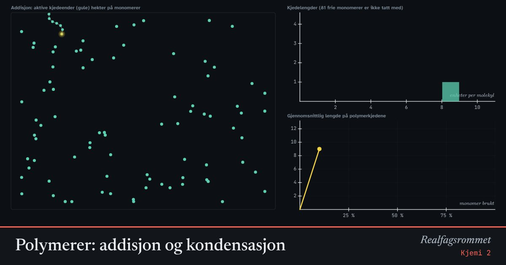

Polymerer: addisjon og kondensasjon
Plast består av svært lange molekyler, polymerer, laget av mange små byggesteiner, monomerer. Ved addisjon hekter monomerene seg på enden av voksende kjeder. Ved kondensasjon kobles molekyler sammen og vann spaltes av.
Start animasjonen
Formler
Om animasjonen
Ved addisjonspolymerisering åpnes dobbeltbindingen i monomeren. En initiator starter en aktiv kjede, og monomerer hekter seg på enden én etter én. Det blir raskt lange kjeder, mens resten av monomerene venter.
Ved kondensasjonspolymerisering reagerer to funksjonelle grupper, for eksempel en syre og en alkohol, og det spaltes av et vannmolekyl. Alle molekylene kan reagere med hverandre, så først dannes korte biter som etter hvert kobles til lange kjeder.
Grafen viser gjennomsnittlig kjedelengde mot hvor mye av monomerene som er brukt. Ved kondensasjon trengs nesten 100 % omsetning for å få lange kjeder.
Plast kan gjenvinnes mekanisk (smeltes og formes på nytt) eller kjemisk (brytes ned til monomerer). Polyestere som PET og PLA kan spaltes tilbake med vann (hydrolyse).
Prøv dette
- Kjør addisjonspolymerisering. Hvor mange monomerer er igjen når de første kjedene er lange?
- Kjør PET. Hvor stor må omsetningen være før gjennomsnittet passerer 10 enheter?
- Hvorfor dannes det vann ved kondensasjonspolymerisering, men ikke ved addisjon?
- Hvilken type polymerisering gir PLA? Hvorfor kalles den ofte biologisk nedbrytbar?
Kompetansemål
- Kjemi 2: Metaller og plast: produksjon og gjenvinning